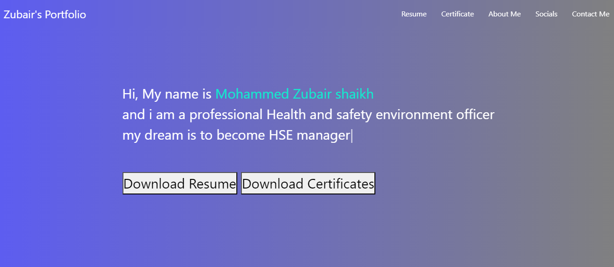
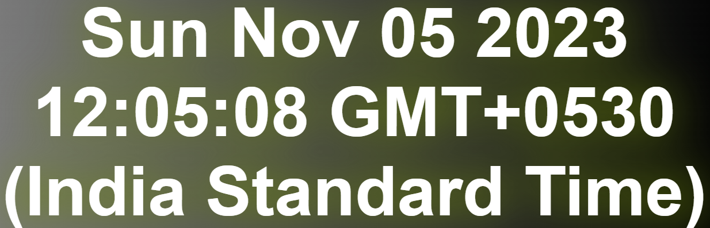

To-Do List
"As a novice web developer, I've designed and developed a practice project - a functional to-do list. This project showcases my grasp of web development fundamentals, including HTML, CSS, and JavaScript, and serves as a practical exercise to enhance my skills."
Portfolio Project
"As a budding web developer, I've meticulously curated and crafted a portfolio project list to bolster my skills in web development. This list comprises diverse projects aimed at showcasing my expertise in HTML, CSS, JavaScript, and other relevant technologies. Each project within this portfolio collection serves as a stepping stone in my journey to becoming a proficient web developer."

Quiz App
"As an aspiring web developer, I've diligently constructed a quiz app project to fortify my programming skills. This project encompasses the creation of an interactive quiz application using HTML, CSS, and JavaScript. Through this endeavor, I aim to deepen my understanding of frontend development concepts while mastering the implementation of user-friendly interfaces and dynamic functionalities."
Digital Clock
"As a budding web developer, I've successfully crafted a digital clock project to enhance my coding expertise. This undertaking involves the development of a functional and visually appealing digital clock using HTML, CSS, and JavaScript. Through this initiative, I've aimed to refine my skills in frontend development, mastering the creation of a responsive and efficient digital clock interface."